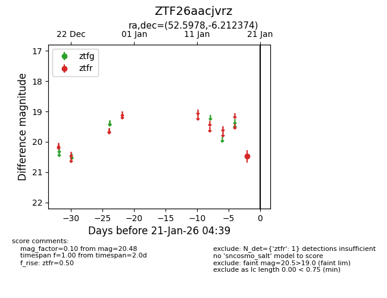
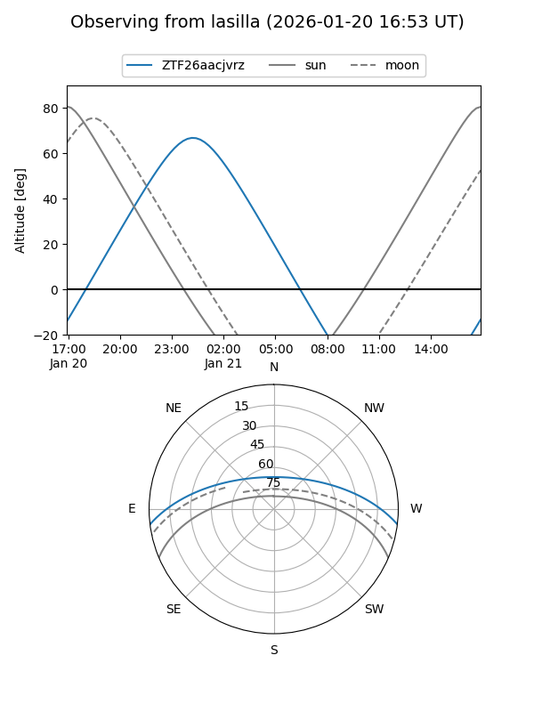
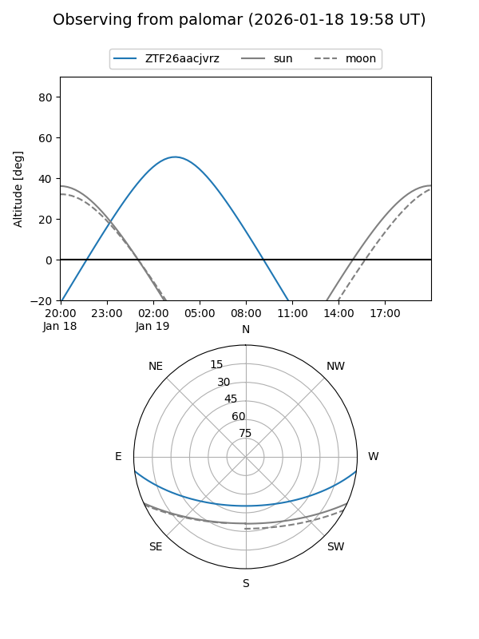

ZTF26aacjvrz
Target ZTF26aacjvrz at 2026-01-21 04:40
Aliases and brokers:
FINK: link
Lasair: link
ALeRCE: link
alt names
ZTF26aacjvrz (ztf,fink_ztf)
Coordinates:
equatorial (ra, dec) = 52.5978,-6.21237
equatorial (HMS+DMS) = 03:30:23.48,-06:12:44.54
galactic (l, b) = (191.2815,-46.86130)
Flags:
Photometry:
last ztfr=20.48
1 ztfr detections
Lightcurve

Visibility


Additional plots